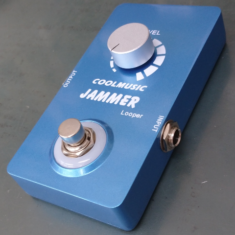
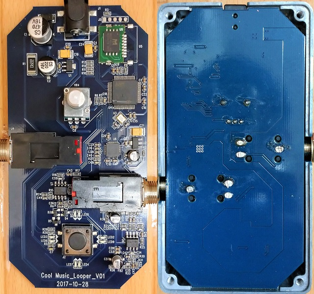
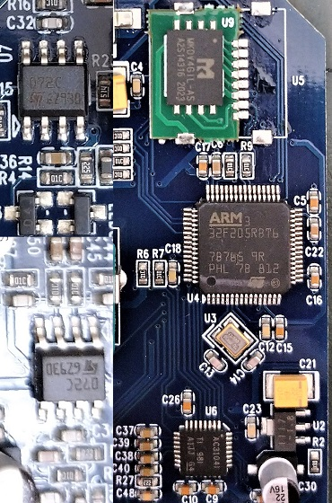
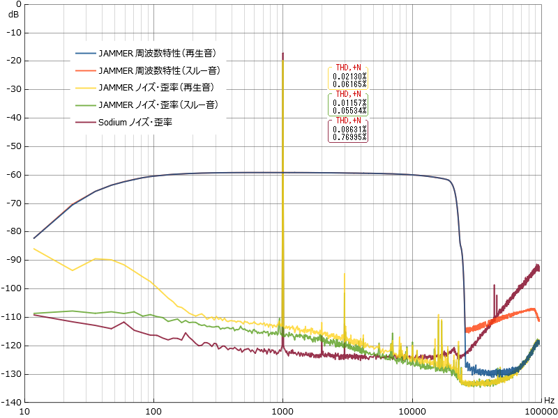

COOLMUSIC JAMMER Looper 分解・特性測定
2021年11月12日 カテゴリー：修理・改造・解析

現在、様々な格安エフェクターが販売されています。その中でルーパーはやや価格が高くなっており、中身が気になったので買ってみることにしました。選んだのは、独特の薄いケースが採用されているCOOLMUSIC A-LP01 JAMMER Looperです。分解・特性測定を行っておきます。
【分解】
▽中身画像 COOLMUSIC A-LP01 JAMMER Looper Gut Shots

ケースのみの大きさは縦114mm横60mm高さ21mmです。裏フタ固定ネジは六角穴付きボルト（キャップボルト）ですが、普通のM3ネジが使えます。フットスイッチやポットは通常より高さが低くなっており、特注なのかもしれません。アナログGNDとデジタルGNDは、電源部で接続されているように見えます。
ICは以下の通りです。
・マイコン STM32F205RBT6
・オーディオコーデック TLV320AIC3104
・フラッシュメモリ MKDV4GIL-AS
・オペアンプ TL072
【特性測定】
▽周波数特性・ノイズ・歪率

低音域が少しカットされているので、どこかのコンデンサを交換すれば改善するかもしれません。録音したものを再生した時、低音域側のノイズが多くなっていますが原因不明です。
私が製作したデジタルエフェクターSodiumの方が可聴域内のノイズが少ないです。SodiumのオーディオコーデックPCM3060のSN比は99dB、TLV320AIC3104のSN比は92dBなので妥当な結果だと思います。
【内部プログラムの読み取り】
STM32CubeProgrammerを使って基板上側のJ5からマイコンへ接続してみました。接続には成功しているようですが、読み取りや消去はできませんでした。もっと技術力があれば可能かもしれませんが、マイコンを新品にした方が簡単そうです。いつか半導体不足が解消し、STM32F205RBT6が手に入ったら交換してみたいと思います。